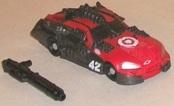

Allegiance : Autobot
Size : Commander
Difficulty of Transformation : Easy
Color Scheme : Moderately dark glittery blue, light gray, and some black, silver, dark charcoal gray, pale metallic gold, and metallic copper
Individual Rating : 8.7
Set Price : $10 U.S.
(NOTE: Because this set is composed of repaints,
this is not a full-blown review. This mainly covers any changes made to
the set and the color scheme, and merely compares it to the original versions
of these molds. For a review on the original DotM commander class Ironhide,
go
here
. For a review on the original
DotM legion class Leadfoot, go
here
.)
 Ironhide
Ironhide
Allegiance
: Autobot
Size
: Commander
Difficulty of Transformation
: Easy
Color Scheme
: Moderately dark glittery
blue, light gray, and some black, silver, dark charcoal gray, pale metallic
gold, and metallic copper
Individual Rating
: 8.7
Ironhide's main (and
most obvious) deco change for his "Cyberglyph" version is that his main
color is now a somewhat dark shade of blue, but it's not simply that--
the particular shade of blue is really goregous that's used for this figure.
It's still plastic, but it's swirly and semi-metallic to the point where
it all looks like it's been painted. The light flat gray and black may
be standard colors on movie toys, but they contrast against the blue quite
well. They're also mixed up from the original release of this mold, with
the black in place of the gray and the gray in place of some of the black,
particularly in robot mode, which helps to differentiate the whole scheme
a bit more. The metallic paint apps-- such as the gold on the end of Ironhide's
cannon, the silver on his grill and face, the bronze on his headlights--
look even better. (I particularly like how all the colors come together
on his front.) He also has four black "Cyberglyph" tattoo paint apps on
his front and sides-- though they look cool, making them out of silver
or copper paint apps really would've made them look outstanding. His taillights,
unfortunately, aren't painted, but that's about the only real oversight
in terms of paint apps.
No mold changes have
been made to this version of Ironhide.
 Leadfoot
Leadfoot

Allegiance
: Autobot
Size
: Legion
Difficulty of Transformation
: Very
Easy
Color Scheme
: Dark brownish gray,
light red, and some silver, black, chalky white, and dark metallic silvery
blue
Individual Rating
: 6.8
Leadfoot is more of a
variant than an actual repaint, with his base colors and most of his paint
apps being the same as the mass-release version. The main difference here
is that there's more light red paint on the front hood, along with a big
movie-accurate Target logo in the middle of said hood-- which is of course
expected, given that this set is a Target exclusive. On the other hand,
a few paint apps have been removed-- namely his windshield, which is now
the same dark brownish gray as most of the rest of him, along with the
silver on his head (though the latter now has a tiny Autobot symbol on
the forehead). The former doesn't bug me, but the latter looks a little
ugly and isn't really movie-accurate. His light silvery blue visor paint
app is also now a much darker shade of the color.
Leadfoot doesn't have
any core mold changes made to this version, but he does come with a two-part
long-barreled gun accessory, which sadly can't store in vehicle mode.
If you don't have any other versions of these two molds and like the characters, this set is a very easy pick-up. Both molds have paint jobs that-- in either major or minor ways-- are superior or more movie-accurate than their mass retail versions, and to top it all off, the whole set is only slightly more expensive than just Ironhide at mass retail, making it a pretty good deal. Recommended if you like Cyberverse-scaled toys and the movie aesthetic.
Reviews by Beastbot